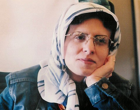

پذيرش > اخبار > کمپین یک میلیون امضا؛ افزایش آگاهی و حساسیت


 کمپین یک میلیون امضا؛ افزایش آگاهی و حساسیت کمپین یک میلیون امضا؛ افزایش آگاهی و حساسیت
10 آبان 1391 - - نسخه قابل چاپ
کلمه: گروههایی از فعالان جنبش زنان ایران در ۲۲ خرداد سال ۱۳۸۵ در میدان هفت تیر تهران در اعتراض به قوانین تبعیض آمیز علیه زنان تجمعی برگزار کردند. این تجمع از سوی پلیس به خشونت کشیده شد و بیش از هفتادنفر نیز بازداشت شدند. این فعالان زن برای پیگیری اهدافی که در قطعنامه آن تجمع اعلام کرده بودند، تصمیم گرفتند خواستههای خود را با شیوههایی متفاوت از تظاهرات خیابانی پیگیری کنند. این بود که حرکتی جمعی و هدفمند (کمپین) را در دستور کار خود قرار دادند. این کمپین در واقع تلاش وسیعی برای» جمعآوری یک میلیون امضاء «از شهروندان ایرانی بهمنظور درخواست تغییر قوانین تبعیضآمیز در ایران است.
گرچه جمع آوری امضا یکی از اهداف این کمپین است اما هدف اصلی و مهمترش همچنان که در طرح کمپین پیش بینی شده افزایش آگاهی و ایجاد حساسیت در میان زنان و مردان نسبت به تبعیضهای قانونی است که نسبت به زنان روا میشود. داوطلبان این کمپین برای آگاهی بخشی اقدام به برگزاری کارگاههایی در شهرها و روستاها کردهاند.
گرچه در شهرهای کوچک و روستاها نسبت به شهرهای بزرگ کارگاه های کمپین یک میلیون امضا کمتر برگزار میشود، اما به گفته داوطلبان این کمپین برگزاری کارگاهها در چنین مناطقی حاوی تجربههای جدید و مشکلات جدی برای آنها بوده است.
مسائلی که داوطلبان کمپین در شهرهای کوچک و سنتی و یا روستاها با آن روبرو هستند، بسیار متفاوت با شهرهاست. زنان و دختران روستایی حتی گاهی با تبعیضهای قانونی که نسبت به زنان روا داشته میشود، موافق هستند و این موضوع آموزشگران کمپین را آزار میدهد.
«زارا امجدیان»، یکی از داوطلبان کمپین است که برای برگزاری کارگاه حقوق زنان به روستای دارجونه در استان نسبتا محروم چهار محال و بختیاری رفته بود. وقتی از قانون تبعیض آمیز ارث در قوانین ایران سخن گفته و اضافه کرده بود که یکی از خواستههای کمپین یک میلیون امضا برابری ارث زنان و مردان است با اعتراض گروهی از دختران روستایی مواجه شد که با این برابری مخالف بودند.
زارا به تلخی حرف های یک دختر جوان روستایی را به یاد میآورد که محکم در برابرش ایستاده و گفته بود: «این حق برادر من است که دو برابر من که خواهرش هستم ارث ببرد. چرا باید مخالف این قانون باشم؟ برادرم ارث را برای دختری میبرد که با او ازدواج میکند و شوهر آیندهٔ من نیز ارث را به زندگی من خواهد آورد.»
و زارا از دختر روستایی پرسیده بود: «اما اگر تو ازدواج نکردی، چه؟ اگر سهم شوهر تو از ارث پدریاش به همان اندازه که پدرتو برای برادرت ارث گذاشته، نباشد چطور؟»
دختر پاسخی نداده و فقط تکرار کرده بود: «من از حق ارث بیشتر برادرم نسبت به سهم خودم دفاع میکنم. برادرم از من مهمتر و زندگیاش هم از زندگی من مهمتر است.»
او تنها دختر روستایی نیست که چنین میاندیشد. در بسیاری از روستاها و حتی شهرهای کوچک و بزرگ ایران مردان از ارزش و احترام بیشتری در خانواده و حتی در چشم خواهران و مادران خود برخوردارند. مادرانی که فرزند پسر دارند از نفوذ و جایگاه بالاتری نسبت به مادرانی که فرزند پسر ندارند، برخوردارند. این یک ضرب المثل معروف در بسیاری از روستاها و شهرهایی با فرهنگ سنتی است: «زنی که پسر ندارد، پایههایش روی آب است.» پایههای روی آب استحکام ندارد و متزلزل است.
در چنین فرهنگی که مرد بودن به خودی خود یک امتیاز و ارزش محسوب میشود و بسیاری از مادران پسران خود را از دختران خود بیشتر دوست دارند و بسیاری از زنان برادرهای خود را به خواهران خود ترجیح میدهند، حرف زدن از لزوم برابری حقوق زنان و مردان کاری دشوار است.
زارا دقایقی طولانی در این کارگاه روستایی احساس ناتوانی کرده بود: «آنها وضع فرودست خود را به عنوان وضع ایده آل پذیرفتهاند و هیچ اعتراضی نسبت به نابرابریها ندارند. آنقدر فرهنگ مردسالارانه در ذهنشان ریشه دوانده که اصلا نمیتوانند نابرابریها را احساس کنند و اگر هم احساس میکنند آن را به عنوان یک پدیده طبیعی پذیرفتهاند.»
تفاوت واکنشها نسبت به قانون تبعیض آمیز ارث
واقعیت اینکه در بسیاری از شهرهای کوچک و همینطور روستاهای ایران از جمله در استان چهار محال و بختیاری در جنوب ایران، حتی همان سهم نابرابر و ناعادلانهای که قوانین ایران به عنوان ارث برای دختران در برابر برادرانشان در نظر گرفته است، به آنها تعلق نمیگیرد. یک قانون نانوشته و یا به عبارت درستتر همان عرف و سنت مردم در این منطقه بزرگ، دختران را به طور کلی از گرفتن ارث منع میکند و اگر دختری این جرات را به خود بدهد که سهم ارث قانونی خود را از ارث پدریاش طلب کند، ازسوی اعضای خانواده، فامیل دور و نزدیک و حتی همشهریهایش طرد میشود. چرا که از نظر این خانوادههای سنتی که تعدادشان در ایران کم هم نیست برادر مرکز خانواده است و نقش اصلی را در حفظ نام و اصالت خانواده ایفا میکند و در چنین وضعی چرا یک خواهر به خودش اجازه میدهد که از برادر طلب حق خود را بکند.
«ثریا خالدی»، تنها زنی که در استان چهار محال و بختیاری سردفترثبت اسناد رسمی است، میگوید: «تجربههای کاریام در دفتر ثبت اسناد به من اثبات کرده است که مردم اینجا خیلی بد میدانند که زنی طلب ارث کند. میگویند ارث حق مرد است و نه زن. من زنان بسیاری را دیدهام که به اجبار و به خاطر فشارهای عرفی ارث خود را به برادران خود بخشیدهاند.»
«طلعت تقی نیا»، یکی دیگر از آموزشگران کارگاه های کمپین نیز در یک کارگاه روستایی احساس ناامیدی کرده بود و با خودش گفته بود که انگار داریم وقت خودما ن را تلف میکنیم. این دختران و زنان روستایی بیعدالتیهای موجود را نه فقط در باره خود پذیرفتهاند که حتی آن را مطلوب نیز میدانند. اما خیلی زود به خودش مسلط شده و به خودش نهیب زده بود: «این زنان و دختران مقصر نیستند. آنها وارث قرنها مردسالاری هستند و تصوری جز این از زندگی ندارند. ما باید آنها را با حقوق خود آشنا کنیم.»
طلعت میگوید: «ما باید در روستاها و شهرهای کوچک بیشتر وقت بگذاریم اما متاسفانه امکانات کافی برای این کار نداریم. زنان روستایی ما نیازمند آموزش مستمر هستند اما به خاطر نبود امکانات مجبوریم به کارگاههای پراکنده بسنده کنیم. ما تاکنون نتوانستهایم کار مستمر در روستاها و شهرهای کوچک انجام دهیم.»
تفاوت واکنش مردم شهر و روستا نسبت به قانون تبعیض آمیز ازدواج
سن ازدواج برای دختران در قانون مدنی ایران سیزده سال است که از نظر فعالان حقوق زنان در ایران بسیار نامناسب و پایین است. یکی از خواستههای کمپین یک میلیون امضا تغییر این قانون و افزایش آن به هجده سالگی است.
داوطلبان کمپین به هنگام برگزاری کارگاه های آموشی کمپین و یا به هنگام جمع آوری امضا با واکنشهای متفاوتی در این باره در شهرهای بزرگ، کوچک و یا روستاها مواجه شدهاند.
فریده غائب، زار امجدیان و طلعت تقی نیا که نخستین کارگاه روستایی کمپین را در ایران در روستای دارجونه برگزار کردهاند، در این باره میگویند: «دختران روستایی با پایین بودن سن ازدواج مشکلی ندارند، چرا که معتقدند اگر تا پانزده سالگی نتوانند برای خودشان شوهری پیدا کنند، پس از آن به سختی موفق به ازدواج خواهند شد و اگر سنشان از بیست سالگی بگذرد ازدواج را تقریبا برای خود غیرممکن میبینند. نگاه خانواده و اطرافیان و همشهریهایشان به دخترانی که موفق نشوند تا سن پانزده-شانزده سالگی ازدواج کنند، نگرش چندان مثبتی نیست. نگرشی که در خوش بینانهترین حالت با دلسوزی همراه است وگاه با این قضاوت همراه میشود که شاید این دختر دارای نقصی است که هنوز شوهری برایش پیدا نشده است. طبیعی است که در چنین شرایطی دختران روستایی نسبت به قانون سن ازدواج بیتفاوت وگاه حتی مخالف افزایش آن باشند.»
فریده میگوید: «بسیاری از دختران روستایی میگفتند که تعداد دختران از پسران در ایران کمتر است بنابراین اگر زودتر و تا قبل از پانزده سالگی ازدواج نکنند، برای همیشه بدون شوهر خواهند ماند. استناد دختران به آمارهای نادرست و از منابع نامعلوم بود که در این چند ساله به کرات در ایران شایعه شده و دهان به دهان گشته است و حتی به برخی از رسانهها نیز راه یافته است.» فریده و دوستانش سعی کردند برای دختران روستایی توضیح بدهند که این آمارها واقعیت ندارد و براساس آمارهای صحیح مرکز آمار ایران نه فقط تعداد دختران از پسران بیشتر نیست که کمتر هم هست و «به ازای هر هزار دختر، هزار و ۱۸ پسر در کشور وجود دارد.»
با این همه اما زارا میگوید که این حرفها به این معنا نیست که او و دیگر داوطلبان کمپین هرگز دختران روستایی مخالف با سن پایین ازدواج را ندیدهاند: «دختران روستایی را نیز دیدهام که هنوز ازدواج نکرده و پایین بودن سن ازدواج و اجازه پدر را مشکل خود میدانستند که اگر پدران بخواهند میتوانند آنها را به زور به عقد مردی درآورند که دوستشان ندارند و نمیتوانند اعتراضی بکنند و با این تصمیم پدر، امکان تحصیل را هم از دست میدهند. براساس قوانین ایران اگر پدری دلش بخواهد میتواند دختر خود را قبل از سیزده سالگی به عقد مردی هفتاد ساله در آورد و به خاطر همین قانون ناعادلانه در بسیاری از مناطق ایران بویژه روستاها و شهرهای کوچک، دخترانی که هنوز کودکند به زور وادار به ازدواج میشوند، آن هم با مردانی کهگاه سی –چهل سال از آنها بزرگتر هستند.
مهمترین و بیشترین حساسیت زنان و دختران روستایی و شهرستانی نسبت به قانون چند همسری در قوانین ایران است. چرا که چند همسری اغلب در روستاها و شهرهای کوچک بیشتر از شهرهای بزرگ و مرکزی ایران رواج دارد.
هرچند که به گفته طلعت تقی نیا اغلب زنان روستایی مردان را آنچنان موجودات بینقص وگاه مقدسی میپندارند که در مواردی میگویند که اگر همسر ما زن دیگری گرفته است حتما به این دلیل است که ما نتوانستهایم حق همسری را برایشان به جا بیاوریم. شاید زیبایی امان را از دست دادهایم و یا نمیتوانیم نیازهای او را برآورده کنیم.
به گفته داوطلبان کمپین وضع در شهرها حتی شهرهای کوچک در باره سن ازدواج خیلی بهتر از روستاهاست و هرچه شهرها بزرگتر و مدرنتر میشود، حساسیت مثبت زنان و دختران نسبت به درخواست کمپین برای افزایش سن ازدواج در قوانین ایران بیشتر میشود.
تفاوت واکنشها نسبت به حق اشتغال
براساس قوانین مدنی ایران، حق اشتغال زن در دست شوهرش است و مرد میتواند زنش را از اشتغال محروم کند.
بسیاری از داوطلبان کمپین یک میلیون امضا هنگامی که از این تبعیض قانونی با زنان روستایی سخن گفته و توضیح دادند که یکی از اهداف کمپین تغییر این فانون ناعادلانه است با بیتفاوتی این زنان روبرو شدهاند.
فریده غائب، یکی از داوطلبان کمپین که با زنان روستایی در باره حق اشتغال آنها حرف زده، اما با واکنش مثبت آنها روبرو نشده است، میگوید:» برای زنان روستایی حق اشتغال تا حد زیادی بیمعنی است. بسیاری از آنها حتی به ذهنشان هم خطورنمی کند که میتوانند شغلی به دست بیاورند. چون شاغل شدن خودشان را غیرممکن میدانند. بنابراین حق اشتغال برای آنها معنا و ضرورتی ندارد. بعضی از زنان روستایی به من و دوستانم که برای آنها کارگاه حقوق زنان برگزار کرده بودیم، میگفتند «: این حرفها که میزنید برای شماها که شهری هستید خوب است، برای زندگی شما در شهر خوب است نه برای ما که حتی نمیتوانیم از خانه بیرون برویم.»
حتی یکبار یک دختر جسور روستایی به فریده و زارا گفته بود: «وضع شما در پایتخت خوب است و این حرفها به دردتان میخورد نه به درد ما که نمیتوانیم زندگیمان را تغییر بدهیم.»
تحمل این واکنشها گاهی برای اعضای کمپین که به طور داوطلبانه و با تحمل مشکلات فراوان برای برگزاری کارگاههای آموزشی به شهرهای دور و نزدیک میروند، دشوار میشود اما اغلب آنها خیلی زود به خود مسلط میشوند و ضرورت گسترش کمپین آگاهی بخش یک میلیون امضا را بیش از پیش درک میکنند.
زارا حتی برای زنان روستایی توضیح داده بود که خودش از روستا برخاسته است. اما توانسته تحصیلات عالی داشته باشد و شغل مناسبی پیدا کند. دختران روستایی با تعجب زیاد به او نگاه کرده بودند، بعضی از آنها نمیتوانستند حرف زارا را باور کنند.
او میگوید: «تقریبا همه آنها از وضع موجودشان راضی بودند و مردسالاری آنچنان بر تمام شوون زندگیشان سایه انداخته که به هیچ تغییری فکر نمیکنند. آنها فقط مردان و یا حداکثر زنان شهرنشین را مستحق داشتن شغل میدانند. در یکی از کارگاههای روستایی این سوال را مطرح کردم که چرا دستیابی به یک شغل را تا این حد غیر ممکن میدانید؟ حداقل میتوانید معلم روستای خودتان باشید. شنیدهام همه معلمهای این روستا از شهر میآیند. اما با تعجب به من نگاه میکردند. آنها هیچ شانسی برای خودشان قائل نبودند که به اشتغال و استقلال مادی برسند.»
زهره ارزنی اما بیتفاوتی زنان روستایی را نسبت به حق استغال زنان از جنبهای دیگر مورد توجه قرار میدهد: «زن روستایی آنچنان در تمامی فعالیت مختلف روستا حضور دارد که مسالهاش حق اشتغال یا نبود آن نیست. زن روستایی همیشه کار میکند. بدبختیاش این است که از دسترنج او، پدر، برادر و یا همسرش استفاده میکنند. در شهرهای کوچک که برای اغلب مردانش شغلی نیست و طبق قانون ایران آنها نان آور خانه هستند، زن حتی فکر اشتغال را هم نمیکند. اما در همین حال این روزها در برخی نقاط شهرهای کوچک و حتی روستاها هم دختران تحصیل کردهای داریم که دغدغه اشتغال دارند. چون استقلال مادی برای زن ایرانی مهم و تعیین کننده است.»
زارا و فریده گرچه به تلخی این خاطرات خود را به یاد میآورند اما میگویند: «روستا و زنان روستایی به ما چیزهای زیادی میآموزند. ما از آنها میآموزیم که چه راه درازی را برای رسیدن به مقصد در پیش داریم و برای گسترش آگاهی در میان زنان سرزمینمان چه راه پر پیچ و خمی را باید طی کنیم.»
یکی از مهمترین اهداف کمپین یک میلیون امضا برای جمع آوری امضا بر ضد قوانین تبعیض آمیز ایجاد آگاهی در میان زنان و مردان نسبت به تبعیض آمیز بودن قوانین فعلی و ضرورت تغییر آن است.
*ژیلا بنی یعقوب، روزنامه نگار زندانی و سردبیر وب سایت کانون زنان ایرانی که اکنون در بند زنان زندان اوین به سر میبرد، این یادداشت را پیش از اعزام به زندان برای اجرای یک سال حکم حبس خود نوشته بود که همان زمان در نشریه نروژی نای تید منتشر شد.
ارسال به
بالاترین
،
توییتر
،
فریندفید
،
فیسبوک
در همين بخش :
 پروین ذبیحی برنده جایزه حقوق بشری سازمان غيردولتى اتريشى سودويند شد پروین ذبیحی برنده جایزه حقوق بشری سازمان غيردولتى اتريشى سودويند شد
پخش کارت پستال و بروشور در روز جهانی زن در تهران
تمدید زمان برای امضای بیانیهی جمعی از فعالان زن به مناسبت هشت مارس
مجوزی که در نطفه خفه شد
بیش از 2000 امضا در اعتراض به تبعیض های آموزشی به مجلس تحویل داده شد
ديگر بخش ها :
طرح یک میلیون امضا
|
مقالات
|
سایت نوشته ها
|
اخبار
|
گزارش كمپين
|
گفت و گو
|
علیه سکوت
|
كوچه به كوچه
|
نامه های شما
|
گزارش ویژه
|
گفتگو با اعضا
|
ویژه سالگرد کمپین
|
تصویر برابری
|
دل آرام علی
|
تریبون
|
مقالات
|
تاریخ شفاهی
|
خارج از چارچوب
|
کتابخانه
|
درباره کمپین
|
کمپین در شهرها
|
کمپین در بند
|
صدای تغییر
|
ویژه 22 خرداد
|
لایحه حمایت از خانواده
|
گالری
|
عشا مومنی
|
امیر یعقوبعلی
|
خدیجه مقدم
|
راحله عسگری زاده و نسیم خسروی
|
پروین اردلان،جلوه جواهری، مریم حسین خواه، ناهید کشاورز
|
زینب پیغمبرزاده
|
سعیده امین، سارا ایمانیان، محبوبه حسین زاده، ناهید کشاورز و همایون نامی
|
احترام شادفر
|
نسیم سرابندی زاده،فاطمه دهدشتی
|
وبلاگ مهمان
|
پرونده خرم آباد
|
دستگیری ها
|
مریم مالک
|
پرستو اللهیاری
|
مهرنوش اعتمادی
|
سمیه رشیدی
|
Other Languages
|
همراهان
|
«فراخوان کمپین ده روز با بهاره هدایت»
| English
|